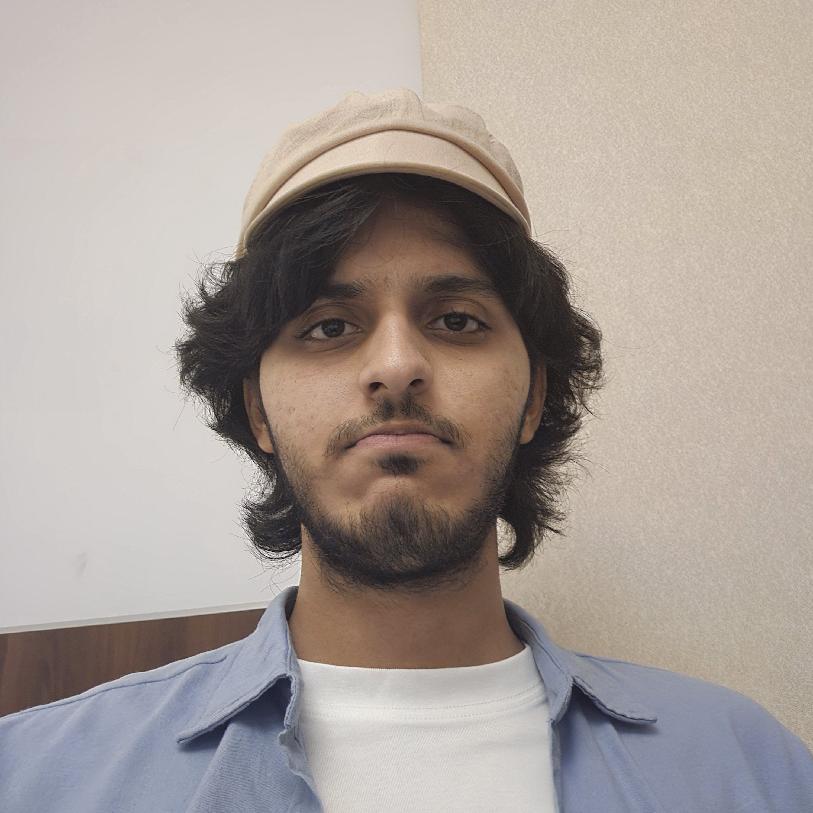

Hi! I'm Amaan. An aspiring developer with experience in Web Dev tools and
various hobbies like languages,
chess,
reading, music etc.

I have been programming since the days of secondary school, and I got interested in it due to the
possibility of creating anything imaginable. I have always loved solving problems, especially logical
ones, and that's one of the major factors for me to stick to this discipline. Solving problems excites me
and if I can see a visual solution of my work, it's an outcome I strive for: the reason for me to explore
front end development. My main focus has always been back end and computer architecture, as I have a nag
for mathematics and physics behind the computers from the lowest levels of computers to high-level abstraction.
Whenever I take on a project, my initial thought is to manage the technicalities and utilize the
resources I have to reach a logical solution.
Other than the hard skills I learnt in this field, a few other things I learnt by being in the field
were the importance of team work and integration of ideas and expertise of multiple individuals.
I plan onto move towards a more in-depth understanding of my current stack and acquire more experience with
back end tools, especially server-side elements. I'm also planning to use my skills in open source and
contribute as much as possible in my spare time. You can contact me for business or even just a geeky
conversation about computers would also be appreciated.
Thank you for visiting my page, hoping to see you soon :)